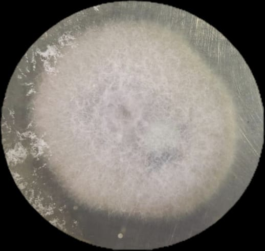
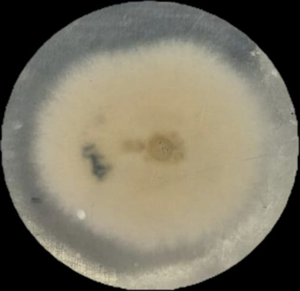

La muestra CAM A fue cultivada en agar papa dextrosa (PDA), mostrando un crecimiento con diámetros de 9.24 mm, 27.82 mm, 46.98 mm, 57.42 mm y 86.32 mm, y una tasa de crecimiento de 0.38 ± 0.03 mm/h.
La colonia presentó una forma irregular con margen filamentoso. La elevación fue convexa y la textura aterciopelada. La superficie fue de color blanco, mientras que el reverso presentó una tonalidad amarillenta.
Se observó una zonación con manchas azules intensas, lo cual sugiere variaciones en la producción de estructuras o metabolitos. No se observaron exudados ni producción de pigmentos difusibles, ni se registró olor característico.